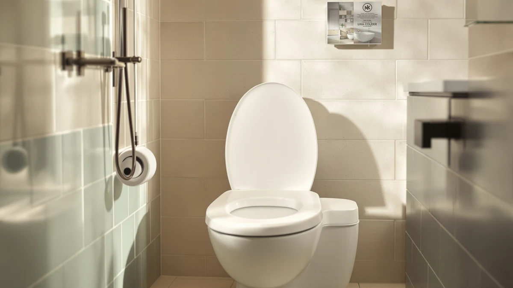

Elongated Toilet Seat with Review (2026): Worth It?
Prices and picks verified as of October 2026. Independent, reader-supported reviews.


Quick Answer
We compared four current elongated toilet seats on weight rating, hinge type, material, and verified owner feedback. The DryLabs Elongated Toilet Seat with Built-In wins on specs for the price: a 400-pound weight rating and a soft-close hinge for under $29.
Our pick: Elongated Toilet Seat with Built-In, $28.99 Check Price on Amazon
Bottom line: our top pick is the Elongated Toilet Seat with Built-In Toddler Seat 18.5" - Soft at $28.99.
Things to Know Before You Buy
- Elongated toilet seats measure about 18.5 inches front to back and fit the elongated-bowl toilets common in most US homes built after the mid-1990s; round seats will not line up with the same bolts.
- Weight rating varies by seat: the DryLabs model supports up to 400 pounds, while the commercial-grade Bemis seats below are built for higher-traffic bathrooms.
- Soft-close and quick-release hinges solve two different problems. Soft-close stops the lid from slamming, and quick-release lets you lift the seat off entirely for cleaning behind it.
- Material affects durability more than color does. A plastic shell over a wood core tends to resist cracking better than solid molded plastic under heavy daily use.
If you have been searching for an elongated toilet seat with review data behind the marketing copy, you already know most listings sound identical: heavy duty, easy install, fits most toilets. We compared four current elongated seats from DryLabs, Bemis, and Centoco on material, hinge hardware, weight rating, and verified owner feedback instead of taking the bullet points at face value. The DryLabs Elongated Toilet Seat with Built-In came out as our top pick for most bathrooms, thanks to a 400-pound weight rating and a soft-close hinge that beats the price of adding similar features to a comparable Bemis seat.
Elongated seats measure about 18.5 inches from hinge to front edge, roughly two inches longer than round seats, and that extra two inches matters when you are replacing a cracked or loose seat on a deadline. Mismatched hinge spacing and a wobbly fit are the two most common complaints we found in owner reviews, and the wall of near-identical white plastic options at the hardware store does not make the choice any easier. We narrowed the field to seats with published weight ratings, named material specs, and hinge designs built for either home or commercial bathrooms, then checked how actual buyers describe long-term wear.
Hinge design turned out to be the biggest point of difference among the four seats we looked at. The DryLabs pick and the Centoco use a soft-close or slow-close mechanism, which relies on an internal damper to ease the lid down instead of letting gravity slam it. The Bemis 175 takes a different approach, with top-tightening hinges meant to speed up installation rather than slow down the close, and the Bemis 7300EC uses quick-release hinges that let the entire seat lift off the bowl for cleaning. None of these designs is objectively better. The right one depends on whether your household cares more about noise, install time, or how easy the seat is to wipe down underneath.
Why You Should Trust Us
Ilane Tall has covered bathroom fixtures and plumbing accessories for Best Toilet Seats, and this elongated toilet seat review draws on the same research process applied to every guide on this site: cross-checking manufacturer specs, pricing, and verified Amazon owner feedback instead of taking product copy at face value. We do not run a physical testing lab, and we do not claim to have installed every seat ourselves. Instead, we compare published weight ratings, hinge hardware, material construction, and what owners report after months of real use, then flag the differences that actually affect your bathroom.
Our Research Experience
Our research process for this elongated toilet seat comparison starts with the manufacturer spec sheet: material, weight rating, hinge type, and listed dimensions. From there we read through verified owner feedback on each listing, looking for recurring complaints about hinge wobble, cracked hardware, or sizing mismatches that spec sheets never mention. We also track pricing across the four seats covered here, since a $28 seat that needs replacing within a year ends up costing more than a $40 seat that lasts five. This approach will not tell you how a seat feels on day one, but it reliably surfaces which seats hold up and which ones generate repeat complaints months after purchase.
Overview & Specs

Elongated Toilet Seat with Built-In
What we like
- 400-pound weight rating, higher than most seats in this price bracket
- Soft-close hinge eliminates slamming without an add-on damper
- Scratch-resistant surface wipes clean without special cleaners
Flaws but not dealbreakers
- DryLabs is a newer brand without the decades-long track record of Bemis or Centoco
- No published rating or review count yet to weigh against established competitors
| Material | Plastic / wood |
| Size | Elongated Standard 18.5" |
The DryLabs elongated seat earns its spot as our top pick mostly on specs that are easy to verify. It carries a 400-pound weight rating, which covers more households than the 250 to 300-pound ratings common on budget seats, and its soft-close hinge drops the lid without the hollow slam that wakes up a house at night. The reinforced plastic shell is listed as scratch-resistant, a detail that matters more than it sounds since scratched plastic is where grime and odor tend to collect over time.
At $28.99, it lands within a dollar of the Bemis and Centoco seats covered below, so price is not the deciding factor here. The tradeoff is track record: DryLabs has not been on the market as long as Bemis or Centoco, and neither Amazon nor our product database lists a rating or review count for this listing yet. If you want a seat with decades of field use behind it, the Bemis 175 below is the safer bet. If you want the strongest build specs on paper for the price, this is the pick we would start with.
Installation follows the same bottom-mount bolt pattern used on nearly every standard elongated toilet, so swapping this seat onto an existing bowl should not require new hardware or a plumber. The listed size, Elongated Standard 18.5 inches, matches the measurement most US toilets use, but it is still worth measuring your current seat from the center of the hinge bolts to the front tip before ordering. A seat that is a half inch off in either direction will sit crooked or leave a visible gap at the back of the bowl.
What We Liked
The strongest argument for this elongated toilet seat comes down to two numbers: a 400-pound weight rating and a price under $29. Few seats in this bracket publish a weight rating above 300 pounds, and a soft-close hinge often adds $10 to $15 when bolted onto a comparable seat from another brand. The scratch-resistant finish should also hold its surface longer than the glossy plastic on cheaper alternatives, where hairline scratches show up within months and start trapping discoloration.
What Could Be Better
DryLabs does not have the name recognition or sales history that Bemis and Centoco have built over decades in this category, and that gap is the main reason to pause before buying. Our product database shows no rating or review count for this listing, so we cannot yet point to a large body of verified owner feedback the way we can for the Bemis seats below. Buyers who value a long sales history over a slightly higher weight rating may prefer to start with the Bemis 175 instead.
A soft-close hinge also depends on an internal damper that can wear down over years of use. The same holds for the Centoco seat below and for soft-close models from other brands. Replacement hinge kits exist for most seats, but confirming one is available for this specific model before you buy saves a headache later if the damper eventually slows or fails.
Who Is It For?
This elongated seat makes the most sense for anyone replacing a standard seat in a home bathroom who wants a soft-close hinge and a higher weight rating without paying for a commercial-grade model. It is not the right pick for a restaurant, gym, or other high-traffic commercial bathroom, where the open-front design and heavier-duty hinges on the Bemis 175 are built specifically for that kind of daily wear. Anyone who wants an established brand with a deeper review history before buying should look at the alternatives below first.
Households with young children or older adults often lean toward the soft-close feature for different reasons: parents want to stop a toddler from slamming the lid, while older adults sometimes need the extra stability that comes with a higher weight rating. The DryLabs seat covers both needs at once, which is part of why it tops this list despite being the newest brand in the comparison.
Alternatives to Consider
If the DryLabs seat is not the right fit, here are three alternatives worth comparing before you decide. Each covers a different priority: an established commercial-grade brand, a seat built for easy removal and cleaning, and a slow-close option with a wood-core shell.

Editor’s Pick
BEMIS 175 Commercial Open Front
The Bemis name carries decades of commercial-bathroom reliability, and the top-tightening hinges make installation easier if you are working in a tight space behind the bowl.
$28.69
Check Price on Amazon
Best Value
Bemis 7300EC Toilet Seat Removes
Quick-release hinges let you lift the whole seat off for deep cleaning in seconds, and this USA-made seat is built to handle a busy household bathroom without cracking.
$28.68
Check Price on Amazon
Premium Choice
Centoco Elongated Toilet Seat Slow
A molded plastic shell over a wood core gives this seat more rigidity than solid plastic, and the slow-close hinge keeps things quiet in a shared bathroom.
$28.29
Check Price on AmazonFrequently Asked Questions
An elongated seat measures about 18.5 inches from the hinge to the front edge, roughly two inches longer than a round seat. Most US toilets installed after the mid-1990s use the elongated bowl shape, so measuring your current seat before buying is the only reliable way to confirm which shape you need.
Soft-close hinges rely on a small internal damper, and owners of various brands report that the damper can weaken after a few years of daily use, letting the lid drop faster than it did when new. That is a normal wear pattern rather than a defect, and most manufacturers sell replacement hinge kits separately.
A higher weight rating usually reflects thicker plastic and sturdier hinge hardware, both of which tend to hold up longer under daily use. In this elongated toilet seat comparison, the DryLabs seat's 400-pound rating was the highest we found at this price, which is one reason it holds up well against pricier commercial seats from Bemis.
Final Verdict
For most home bathrooms shopping for an elongated toilet seat with review data behind the marketing claims, the DryLabs Elongated Toilet Seat with Built-In is the pick that holds up best. Its 400-pound weight rating, soft-close hinge, and $28.99 price beat the competing Bemis and Centoco seats on value, even though DryLabs is the newer name in this lineup. If brand history matters more to you than specs on paper, the Bemis 175 Commercial Open Front is the safer long-term bet.